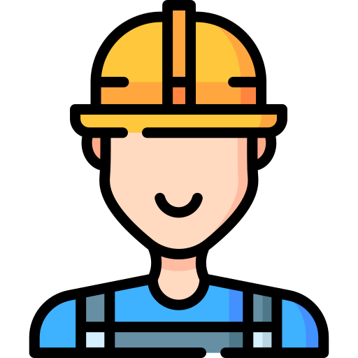

Por una España menos vacía, más viva.
Nuestro objetivo es luchar contra la despoblación rural atacando diversos aspectos.

Fin de la España Vaciada
Nuestro objetivo principal es luchar contra la despoblación rural.

Ofertas de trabajo
Unir a empleados y empleadores para trabajar en entornos rurales.

Conocer municipios
Crear una vía de difusión para que los ayuntamientos muestren sus pueblos.

Información de servicios
Mostrar información de servicios en pueblos y zonas de España.